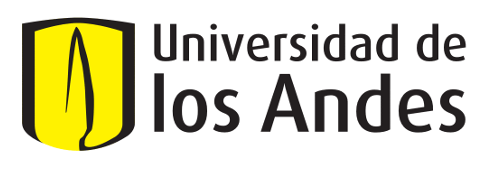

La escuela está organizada en diferentes mini-cursos que permitirán a los asistentes hacen un recorrido por los misterios del magnetismo desde su origen, su fundamentación teórica y experimental, hasta tópicos de gran actualidad. Adicionalmente habrá sesiones de conferencistas nacionales que darán a conocer los resultados de sus investigaciones más recientes en esta excitante área de conocimiento. Finalmente, y la razón de ser de esta escuela, además de impulsar en los jóvenes investigadores su interés por esta área y ofrecerles herramientas de actualidad por parte de investigadores de gran trayectoria en este campo, es generar espacios de discusión y presentación de sus trabajos en la sesión de posters. A continuación, se presenta la programación general del evento, la cuál será detallada más adelante.
Apoyan:
